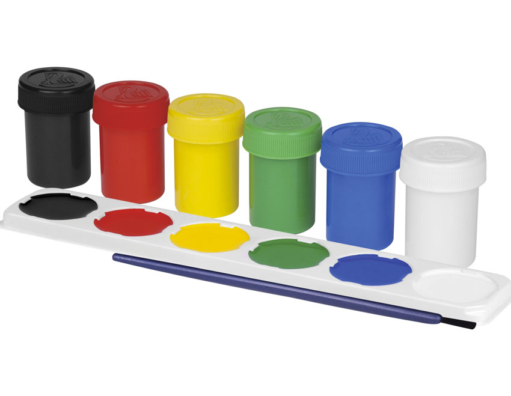

UTILES
 |
$2.300La historia del cuaderno. El cuaderno es mucho más reciente que el papel. Fue inventado en 1920 por J.A. Birchall. Según se tiene constancia, éste australiano fue el primero en juntar varios papeles y unirlos a un pedazo de cartulina.
|
 |
$1.000Breve historia del lapicero La historia del lápiz o lapicero comienza en 1564, en Seathwaite Fell, Inglaterra, con el descubrimiento por vez primera de un yacimiento de grafito puro. Éste se produjo de manera fortuita, cuando una tormenta desarraigó un roble. |
 |
$1.800Origen de las témperas Aunque en la actualidad las témperas se han convertido en un producto de gran popularidad dentro de las papelerías, se trata de un tipo de pintura rodeada de un origen interesante, siendo utilizada como técnica pictórica para la decoración de sarcófagos por los artesanos del antiguo Egipto. |
 |
$600Breve historia del Borrador o Goma de borrar Una vez más encontramos el origen de un producto en nuestra América. El caucho o látex que los habitantes originarios de nuestro continente usaban como pegamento o para elaborar primitivos balones con los cuales jugaban. El primer contacto de los europeos con esta materia prima
|
 |
$2.000Quien Inventó el Marcador. En 1910, Lee Newman ideó el primer rotulador de punta de fieltro. Consistía básicamente en un tubo relleno de tinta que dirigía a una punta de fieltro. Aquí puedes ver un facsímil de su patente .. |
 |
$2.000La plastilina es un material plástico empleado para modelar, de colores variados, compuesto de sales de calcio, vaselina y otros compuestos alifáticos, principalmente ácido esteárico, y es apto para el uso de los niños.
Para muchos historiadores, la plastilina fue inventada en el año de 1880 por el farmaceuta Alemán Franz Kolb, quien en busca de una solución para el rápido secamiento de la arcilla, ideó una mezcla de cera y aceite muy similar a la plastilina que conocemos en la actualidad (calcio, vaselina, compuestos alifáticos, como por ejemplo el ácido esteárico), salvo por su color.. |